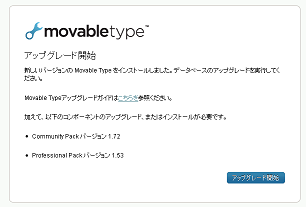
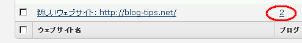
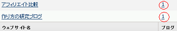
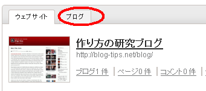

Movable Typeを４から５へアップグレード
エックスサーバーで利用していたMovable TypeのデータベースがSQLITEだったので、４から５へアップグレードできなかったのですが、データベースをMYSQLへと切り替えたのでアップグレードしてみました。
SQLITEからMYSQLへのデータベース切り替え方法については、前回の記事を参照ください。
MTデータベースをSQLITEからMYSQLへの変更方法 - エックスサーバー
４から５へアップグレードする方法としては、上書きインストールする方法もあるようですが、当ブログでは現在インストールされているmtフォルダを別の名前に変えてとりあえず置いておき、新規にmtフォルダを作成、そこにMovable Type５をアップロードする方法をとりました。
Movable Type５のファイルは公式サイトよりダウンロードすることができます。Movable Type 5 の個人無償ライセンス（※5は終了）
このダウンロードしたファイルのmt-config.cgi-originalファイルを書き換えて、新規に作成したmtフォルダへアップロードすることになります。
当ブログの場合、すでにMYSQLで動いているmt-config.cgiのファイル内容を上書きして簡単に書き換えましたが、できるだけバックアップしながら進めることをおすすめします。
- ＭＴ５のファイルをダウンロード
- mt-config.cgi-originalファイルの書き換え
- 現在のMTフォルダを違う名前に変更
- 新規にmtフォルダを作成
- FFFTPで新しく作成したMTフォルダに書き換えたMovable Type５をアップロード
- mt-config.cgi-originalをmt-config.cgiに名前変更
- ＣＧＩファイルの属性を７００に変更
- mt.cgiファイルにアクセス
最終的にmt.cgiにアクセスすると以下のような画面が表示されるので、アップグレードの開始をします。

Movable Type５の場合、ウェブサイトの下にブログを設置するという方法になっています。
通常のブログの場合はウェブサイトもブログも同じＵＲＬで設定してかまわないかと思いますが、企業ホームページのように、ホームページ内の一部にブログを設置するという場合は、それぞれ別に設定する方がやりやすいはずです。
結局、当ブログの場合、以下のような感じでひとつのウェブサイトにふたつのブログが入った状態でアップグレードされました。

この状態では不便なので、新規にもうひとつのウェブサイトを作成し、ふたつにわけています。
やり方は、ブログの管理の箇所で移動するブログを選択し、新規に作成したウェブサイトに一方のブログを移動させるだけです。

ウェブサイトもブログもそれぞれ同じＵＲＬとパスを設定していますが、ブログを更新するときは、ウェブサイトはほったらかしにし、ブログの方で更新するようにしています。
